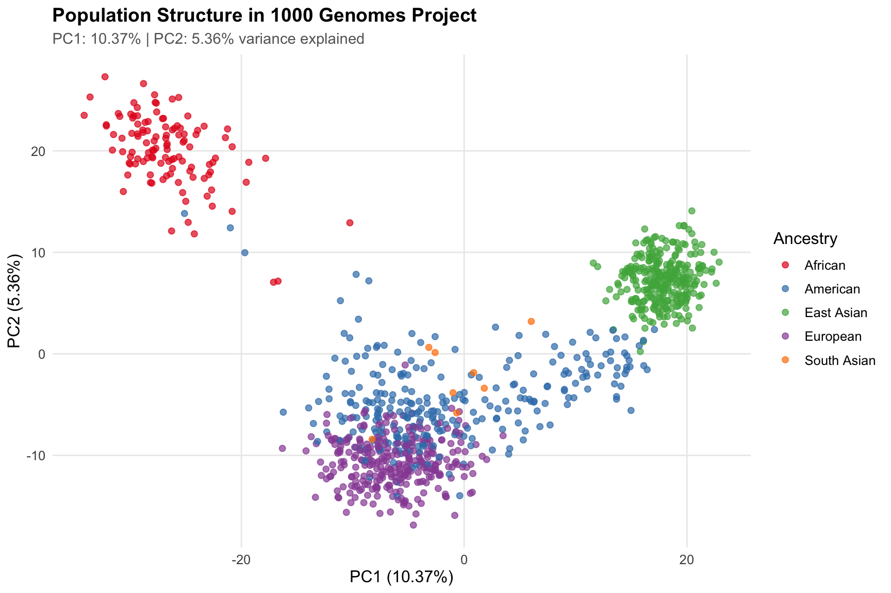
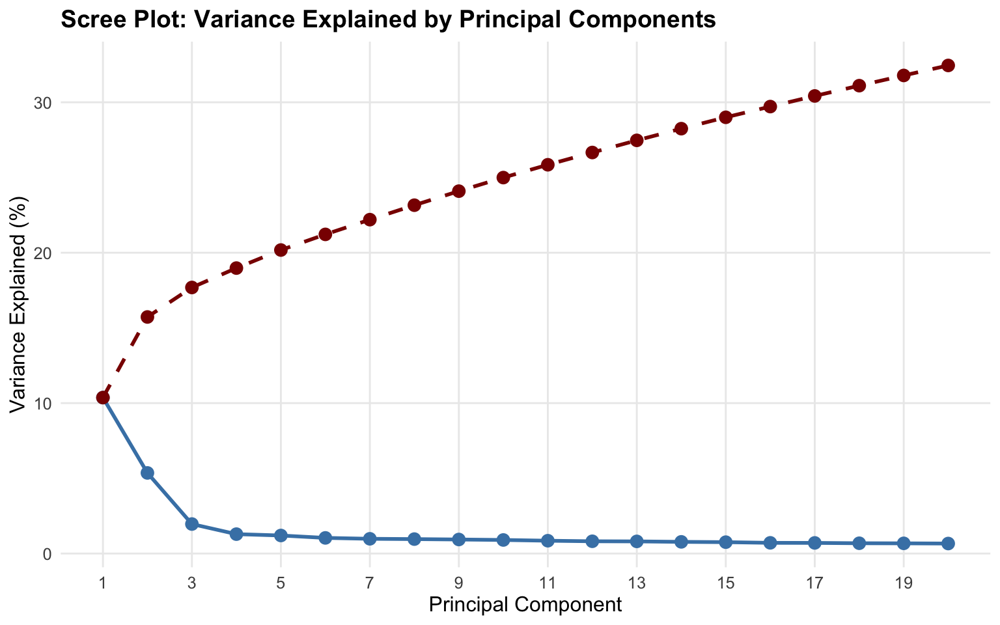

library(BigDataStatMeth)
library(gdsfmt)
library(tidyverse)
library(ggplot2)
# Download genomic data (GDS format)
download.file(
url = paste0("https://raw.githubusercontent.com/isglobal-brge/",
"Supplementary-Material/master/Pelegri-Siso_2025/",
"application_examples/PCA/data/1000G_ethnic.zip"),
destfile = "1000G_ethnic.zip"
)
unzip("1000G_ethnic.zip")
# Download phenotype data (population labels)
pheno_url <- paste0("https://raw.githubusercontent.com/isglobal-brge/",
"Supplementary-Material/master/Pelegri-Siso_2025/",
"application_examples/PCA/data/1000G_samples.tsv")
download.file(pheno_url, destfile = "1000G_samples.tsv")Implementing PCA
Principal Component Analysis on Large-Scale Genomic Data
1 Overview
Principal Component Analysis (PCA) is fundamental in genomics for identifying population structure, detecting batch effects, and reducing dimensionality before association tests. This workflow demonstrates a complete PCA implementation on real-world scale genomic data using BigDataStatMeth, from raw GDS files through quality control to publication-quality visualizations.
Unlike tutorial examples with synthetic data, this workflow uses realistic dataset dimensions (hundreds of thousands of variants, thousands of samples) and addresses practical challenges you’ll face with real data: file format conversions, multi-step quality control, computational optimization, and result interpretation. Think of this as the blueprint for your actual genomic PCA analyses.
1.1 What You’ll Learn
By the end of this workflow, you will:
- Convert GDS (Genomic Data Structure) files to HDF5 format for analysis
- Apply comprehensive quality control for genomic data using the HDF5Matrix pipeline
- Perform block-wise PCA on datasets too large for memory with
prcomp() - Understand the
HDF5PCAresult object and how to access its components - Interpret variance explained and principal component scores
- Create publication-quality PCA plots showing population structure
- Export results for downstream analyses
- Understand when and why each processing step matters
2 The Dataset
We’ll analyze the 1000 Genomes Project data, which provides genetic variants from diverse human populations. This represents a realistic scale for many genomic studies:
- Samples: 2,504 individuals from 26 populations
- Variants: ~800,000 SNPs after standard QC
- File size: ~2-3 GB in GDS format
- Analysis goal: Identify continental ancestry structure
This dataset is small enough to complete on a workstation but large enough that naive approaches (loading everything into memory, using standard R PCA) become problematic. It perfectly illustrates when and why BigDataStatMeth becomes necessary.
3 Step 1: Data Preparation
3.1 Download the Example Data
The 1000 Genomes ethnic subset is available from the BigDataStatMeth supplementary materials:
NoteGDS Format
GDS (Genomic Data Structure) is a container format commonly used for genomic data from sequencing studies. The gdsfmt package provides tools to work with GDS files. We convert to HDF5 because BigDataStatMeth operates on HDF5-backed matrices, and this conversion pattern applies to any genomic data source (VCF, PLINK, GDS).
3.2 Convert GDS to HDF5
Genomic data often arrives in specialized formats. The first step is always to extract the numeric genotype matrix and write it to HDF5 as an HDF5Matrix object:
gds_file <- "1000G_ethnic.gds"
gds <- openfn.gds(gds_file)
genotype <- read.gdsn(index.gdsn(gds, "genotype"))
sample_ids <- read.gdsn(index.gdsn(gds, "sample.id"))
snp_ids <- read.gdsn(index.gdsn(gds, "snp.rs.id"))
rownames(genotype) <- sample_ids
colnames(genotype) <- snp_ids
closefn.gds(gds)
# Trim to 1000 samples for tutorial execution speed
genotype <- genotype[1:1000, ]
cat("Genotype matrix dimensions:\n")Genotype matrix dimensions:cat(" Samples:", nrow(genotype), "\n") Samples: 1000 cat(" SNPs:", ncol(genotype), "\n") SNPs: 78322 cat(" Missing (coded as 3):",
sprintf("%.2f%%", sum(genotype == 3L, na.rm = TRUE) /
length(genotype) * 100), "\n") Missing (coded as 3): 0.00%
ImportantHDF5 Has No Native NA — Use 3 for Missing SNP Values
HDF5 does not have an NA concept equivalent to R’s. BigDataStatMeth uses the integer value 3 as the missing indicator for SNP data, following the common 0/1/2/3 convention (0 = hom ref, 1 = het, 2 = hom alt, 3 = missing).
If the GDS file stores missing values as R NA, replace them with 3L before writing to HDF5. All three QC functions (filter_low_coverage(), filter_maf(), impute_snps()) and the downstream decompositions expect this coding:
genotype[is.na(genotype)] <- 3LFor the 1000 Genomes dataset the GDS already uses 3-coding in most variants, but applying this line defensively is good practice.
# Defensive: ensure any NA is recoded as 3 before writing
genotype[is.na(genotype)] <- 3L
pca_file <- "1000G_pca_analysis.hdf5"
raw_h5 <- hdf5_create_matrix(
filename = pca_file,
dataset = "raw_data/genotypes",
data = genotype,
overwrite = TRUE
)
cat("✓ HDF5Matrix created:", pca_file, "\n")✓ HDF5Matrix created: 1000G_pca_analysis.hdf5 raw_h5HDF5Matrix object
File: 1000G_pca_analysis.hdf5
Path: raw_data/genotypes
Dimensions: 1000 x 78322
Type:
Status: OPENlist_datasets(pca_file) [1] "NORMALIZED_T/quality_control/genotypes_imputed"
[2] "NORMALIZED_T/quality_control/mean_sd/mean.genotypes_imputed"
[3] "NORMALIZED_T/quality_control/mean_sd/sd.genotypes_imputed"
[4] "PCA/genotypes_imputed/components"
[5] "PCA/genotypes_imputed/cumvar"
[6] "PCA/genotypes_imputed/ind.contrib"
[7] "PCA/genotypes_imputed/ind.coord"
[8] "PCA/genotypes_imputed/ind.cos2"
[9] "PCA/genotypes_imputed/ind.dist"
[10] "PCA/genotypes_imputed/lambda"
[11] "PCA/genotypes_imputed/var.coord"
[12] "PCA/genotypes_imputed/var.cos2"
[13] "PCA/genotypes_imputed/variance"
[14] "SVD/genotypes_imputed/d"
[15] "SVD/genotypes_imputed/u"
[16] "SVD/genotypes_imputed/v"
[17] "quality_control/genotypes_imputed"
[18] "quality_control/samples_qc"
[19] "quality_control/snps_missing_qc"
[20] "quality_control/snps_qc_complete"
[21] "raw_data/.genotypes_dimnames/1"
[22] "raw_data/.genotypes_dimnames/2"
[23] "raw_data/genotypes"
TipOrganizing Your HDF5 File
We put the original genotypes in raw_data/. Subsequent QC steps write to quality_control/ and PCA results go to SVD/ (the default group for BigDataStatMeth decompositions). This mirrors a typical analysis workflow and keeps every intermediate step traceable. If you need to rerun QC with different thresholds, raw data remains untouched.
4 Step 2: Quality Control
The QC pipeline chains naturally through HDF5Matrix objects: each function takes an HDF5Matrix, applies a filter, and returns a new HDF5Matrix pointing to the cleaned dataset. No data enters RAM during this process.
4.1 Remove Low-Quality Samples
Samples with excessive missing data often indicate technical problems. We filter samples before variant-level QC so that subsequent SNP statistics are computed on clean samples:
cat("Before sample QC:", nrow(raw_h5), "samples\n")Before sample QC: 1000 samplesqc_samp_h5 <- filter_low_coverage(
raw_h5,
out_group = "quality_control",
out_dataset = "samples_qc",
pcent = 0.05,
by_cols = FALSE, # FALSE = filter rows (samples)
overwrite = TRUE
)
cat("After sample QC:", nrow(qc_samp_h5), "samples\n")After sample QC: 1000 samplescat("Removed:", nrow(raw_h5) - nrow(qc_samp_h5), "\n")Removed: 0 4.2 Remove High-Missingness SNPs
SNPs missing in more than 5% of samples have unreliable allele frequency estimates and should be removed before MAF filtering:
cat("Before missingness filter:", ncol(qc_samp_h5), "SNPs\n")Before missingness filter: 78322 SNPsqc_miss_h5 <- filter_low_coverage(
qc_samp_h5,
out_group = "quality_control",
out_dataset = "snps_missing_qc",
pcent = 0.05,
by_cols = TRUE, # TRUE = filter columns (SNPs)
overwrite = TRUE
)
cat("After missingness filter:", ncol(qc_miss_h5), "SNPs\n")After missingness filter: 78322 SNPscat("Removed:", ncol(qc_samp_h5) - ncol(qc_miss_h5), "\n")Removed: 0 4.3 Remove Low-Frequency SNPs (MAF Filter)
Rare variants (MAF < 5%) contribute noise rather than signal to population structure PCA:
cat("Before MAF filter:", ncol(qc_miss_h5), "SNPs\n")Before MAF filter: 78322 SNPsqc_maf_h5 <- filter_maf(
qc_miss_h5,
out_group = "quality_control",
out_dataset = "snps_qc_complete",
maf_threshold = 0.05,
by_cols = TRUE,
overwrite = TRUE
)
cat("After MAF filter:", ncol(qc_maf_h5), "SNPs\n")After MAF filter: 5863 SNPscat("Removed:", ncol(qc_miss_h5) - ncol(qc_maf_h5), "\n")Removed: 72459
ImportantQC Ordering Matters
We filter samples first, then SNP missingness, then MAF. This order is not arbitrary:
- Samples first: Removing low-quality samples changes allele frequencies and missingness calculations for SNPs
- Missingness before MAF: SNPs with high missingness have unreliable allele frequency estimates
- MAF last: After removing missing data, MAF calculations are accurate
Reversing this order produces different — and less reliable — results.
4.4 Impute Remaining Missing Data
After QC, remaining missingness is typically below 1–2%. impute_snps() replaces each remaining 3 with the most probable genotype for that SNP based on the observed 0/1/2 frequency distribution in the same column:
qc_imp_h5 <- impute_snps(
qc_maf_h5,
out_group = "quality_control",
out_dataset = "genotypes_imputed",
by_cols = TRUE,
overwrite = TRUE
)
cat("✓ Imputation complete\n")✓ Imputation completecat(" Final dimensions:", nrow(qc_imp_h5), "samples ×", ncol(qc_imp_h5), "SNPs\n") Final dimensions: 1000 samples × 5863 SNPs5 Step 3: Perform PCA
prcomp() on an HDF5Matrix runs block-wise PCA entirely on disk. It uses the same argument names as stats::prcomp() wherever possible, with extra parameters for the block-wise algorithm:
pca_result <- prcomp(
qc_imp_h5,
center = TRUE, # Subtract column means — always needed for PCA
scale. = FALSE, # Don't divide by SD (SNPs share the same scale)
ncomponents = 20, # Compute first 20 PCs
k = 4, # 4 local SVDs per hierarchical level
q = 1, # 1 hierarchical level (sufficient for this size)
threads = 4, # Adjust to your CPU core count
overwrite = TRUE
)Anem a sortir de a RcppbdSVD_hdf5 cat("✓ PCA complete\n")✓ PCA completepca_resultHDF5PCA - Principal Component Analysis (on-disk)
File : 1000G_pca_analysis.hdf5
PCs : 20
center : TRUE | scale: FALSE
sdev[1:3]: 14.6152, 10.5079, 6.3567
cumvar% : 10.37, 15.73, 17.69 ...
rotation : 1000 x 5863 [HDF5Matrix]
x (ind.) : 1000 x 1000 [HDF5Matrix]
Noteprcomp() Parameters
- center = TRUE: Subtracts each SNP’s mean — essential so PC1 captures structure, not mean differences
- scale. = FALSE: Standard practice for 0/1/2-coded genotype data where all variables are on the same scale
- ncomponents: How many PCs to compute; requesting fewer speeds up computation considerably
- k: Number of local SVDs per hierarchical level — controls memory vs. I/O trade-off
- q: Hierarchical levels; q=1 is sufficient for most studies, q=2 for very large matrices
- threads: OpenMP parallelization; diminishing returns beyond physical CPU cores
For ~1,000 samples × ~70,000 SNPs after QC: peak ~2–4 GB RAM, ~1–3 minutes on a modern workstation.
6 Step 4: Extract and Examine Results
prcomp() returns an object of class HDF5PCA. Large matrices are stored on disk as HDF5Matrix objects; small summaries live in memory. This means you can access variance statistics instantly without reading large datasets:
| Element | Type | Description |
|---|---|---|
sdev |
numeric vector | Standard deviation of each PC (in memory) |
cumvar |
numeric vector | Cumulative variance explained, % (in memory) |
x |
HDF5Matrix | Sample scores — one row per sample, one col per PC |
rotation |
HDF5Matrix | Variable loadings — one row per SNP, one col per PC |
file |
character | Path to the HDF5 file storing all results |
# Variance statistics — immediately available in memory
cumvar_pct <- pca_result$cumvar # cumulative %
var_pct <- c(cumvar_pct[1], diff(cumvar_pct)) # individual %
cat("Variance explained by the first 10 PCs:\n")Variance explained by the first 10 PCs:var_table <- data.frame(
PC = 1:10,
Individual = sprintf("%.2f%%", var_pct[1:10]),
Cumulative = sprintf("%.2f%%", cumvar_pct[1:10])
)
knitr::kable(var_table,
col.names = c("PC", "Individual (%)", "Cumulative (%)"),
align = c("r", "r", "r"))| PC | Individual (%) | Cumulative (%) |
|---|---|---|
| 1 | 10.37% | 10.37% |
| 2 | 5.36% | 15.73% |
| 3 | 1.96% | 17.69% |
| 4 | 1.29% | 18.98% |
| 5 | 1.20% | 20.18% |
| 6 | 1.04% | 21.22% |
| 7 | 0.98% | 22.20% |
| 8 | 0.96% | 23.16% |
| 9 | 0.93% | 24.09% |
| 10 | 0.90% | 24.99% |
# Sample scores — HDF5Matrix on disk; bring to memory for plotting
# For large datasets, subset first: as.matrix(pca_result$x[, 1:2])
scores <- as.matrix(pca_result$x[, 1:20])
colnames(scores) <- paste0("PC", 1:20)
pcs <- as.data.frame(scores)
# # Sample IDs are stored as rownames in the QC'd HDF5Matrix
pcs$sample_id <- rownames(raw_h5)
cat("Scores matrix:", nrow(pcs), "samples ×", ncol(pcs) - 1, "PCs\n")Scores matrix: 1000 samples × 20 PCscat("\nFirst 5 samples, first 5 PCs:\n")
First 5 samples, first 5 PCs:print(pcs[1:5, c("sample_id", paste0("PC", 1:5))]) sample_id PC1 PC2 PC3 PC4 PC5
1 HG00096 -4.171053 -14.342323 4.102899 5.945049 -6.023022
2 HG00097 -11.609615 -8.926286 7.803668 -9.927961 -5.495585
3 HG00099 -6.847709 -9.289243 3.070892 9.101000 5.875606
4 HG00100 -3.377459 -10.896600 1.496727 -1.343052 -4.033107
5 HG00101 -4.833754 -10.878229 3.486925 -3.138393 -2.015395
TipInterpreting Variance Explained in Population PCA
For population structure PCA:
- PC1–PC2 typically explain 2–5% each for global ancestry
- PC1–PC10 together often explain 10–20%
- Low variance per PC is expected — population structure is a subtle signal relative to individual genetic variation
Red flags:
- PC1 > 50%: Likely a batch effect or technical artifact, not biology
- Sudden separation of a small cluster: possible sample swap or contamination
- PCs correlating with sequencing batch or DNA extraction date: technical confounding
For this 1000 Genomes subset, expect PC1 ~3–5% (continental ancestry) and PC2 ~2–3%.
7 Step 5: Visualize Population Structure
7.1 Merge with Population Labels
pheno <- read_delim("1000G_samples.tsv", delim = "\t", show_col_types = FALSE)
pca_data <- pcs %>%
left_join(pheno, by = c("sample_id" = "Sample name"))
cat("Samples with population labels:",
sum(!is.na(pca_data$`Superpopulation code`)), "\n")Samples with population labels: 1000 7.2 Create PCA Plot
pop_colors <- c(
"AFR" = "#E41A1C",
"AMR" = "#377EB8",
"EAS" = "#4DAF4A",
"EUR" = "#984EA3",
"SAS" = "#FF7F00"
)
pca_plot <- ggplot(
pca_data,
aes(x = PC1, y = PC2, color = `Superpopulation code`)
) +
geom_point(size = 1.8, alpha = 0.7) +
scale_color_manual(
values = pop_colors,
name = "Ancestry",
labels = c("AFR" = "African", "AMR" = "American",
"EAS" = "East Asian", "EUR" = "European",
"SAS" = "South Asian")
) +
labs(
title = "Population Structure in 1000 Genomes Project",
subtitle = sprintf("PC1: %.2f%% | PC2: %.2f%% variance explained",
var_pct[1], var_pct[2]),
x = sprintf("PC1 (%.2f%%)", var_pct[1]),
y = sprintf("PC2 (%.2f%%)", var_pct[2])
) +
theme_minimal() +
theme(
text = element_text(size = 12),
plot.title = element_text(size = 14, face = "bold"),
plot.subtitle = element_text(size = 11, color = "gray40"),
legend.position = "right",
panel.grid.minor = element_blank()
)
print(pca_plot)
ggsave("pca_population_structure.png", pca_plot, width = 10, height = 7, dpi = 300)
cat("✓ Plot saved to pca_population_structure.png\n")✓ Plot saved to pca_population_structure.png7.3 Scree Plot
n_show <- min(20, length(var_pct))
scree_data <- data.frame(
PC = 1:n_show,
Variance = var_pct[1:n_show],
Cumulative = cumvar_pct[1:n_show]
)
ggplot(scree_data, aes(x = PC)) +
geom_line(aes(y = Variance), color = "steelblue", linewidth = 1) +
geom_point(aes(y = Variance), color = "steelblue", size = 3) +
geom_line(aes(y = Cumulative), color = "darkred", linewidth = 1, linetype = "dashed") +
geom_point(aes(y = Cumulative), color = "darkred", size = 3) +
labs(
title = "Scree Plot: Variance Explained by Principal Components",
x = "Principal Component",
y = "Variance Explained (%)"
) +
theme_minimal() +
theme(
text = element_text(size = 12),
plot.title = element_text(size = 14, face = "bold"),
panel.grid.minor = element_blank()
) +
scale_x_continuous(breaks = seq(1, n_show, by = 2))
8 Step 6: Export Results
pcs_export <- pcs[, c("sample_id", paste0("PC", 1:10))]
write.table(
pcs_export,
file = "principal_components_1000G.txt",
sep = "\t",
row.names = FALSE,
quote = FALSE
)
cat("✓ Principal components exported to principal_components_1000G.txt\n")✓ Principal components exported to principal_components_1000G.txtcat(" Samples:", nrow(pcs_export), "\n") Samples: 1000 cat(" PCs included: 10\n") PCs included: 10
NoteUsing PCs in Downstream Analyses
These PCs can be included as covariates in:
- GWAS: Adjust for population stratification to reduce false positives
- Expression QTL mapping: Control for ancestry effects on expression
- Polygenic risk scores: Account for population structure in score calibration
- Clustering: Define ancestry-matched subcohorts for stratified analyses
Standard practice uses PC1–10, though some studies include PC1–20 for fine-scale structure.
9 Exercise
9.1 SVD for Structural Variant Analysis
You will perform a Singular Value Decomposition (SVD) using BigDataStatMeth from a genomic dataset stored in GDS format. The goal is to preprocess the data, store it in HDF5 format, and explore the main components from the quality-controlled dataset.
NoteDataset Required
This exercise uses the chr17inv_small.gds dataset, which contains genotype data from the chromosome 17 inversion region. To run this code with eval=TRUE, place chr17inv_small.gds in your working directory. Contact the package authors or your instructor for access to this dataset.
Chromosome 17 contains a large polymorphic inversion (~900 kb) with three possible genotypes per individual: NI/NI (both chromosomes non-inverted), NI/II (heterozygous), and II/II (both inverted). Because the inversion suppresses recombination, individuals with different genotypes accumulate distinct SNP patterns — SVD is expected to separate the three genotype classes clearly along PC1.
Instructions
- Load the GDS file and extract the genotype matrix using
gdsfmt. - Replace any
NAvalues with3L(the HDF5 missing-value convention for SNP data). - Write the matrix to HDF5 using
hdf5_create_matrix(). - Apply Quality Control filters in order:
- Remove samples with > 5% missing values using
filter_low_coverage()(by_cols = FALSE) - Remove SNPs with > 5% missing values using
filter_low_coverage()(by_cols = TRUE) - Remove SNPs with MAF < 5% using
filter_maf()
- Remove samples with > 5% missing values using
- Impute remaining missing values using
impute_snps(). - Perform SVD decomposition using
svd()(notprcomp()— note the different result structure). - Inspect the HDF5 file structure with
list_datasets()to see all generated datasets. - Produce two plots:
- Cumulative percentage of variance explained (scree plot) using
svd_result$d - Scatter plot of the first two left singular vectors (
svd_result$u)
- Cumulative percentage of variance explained (scree plot) using
TipHints
svd()returnslist(d, u, v)wheredis a numeric vector andu,vareHDF5Matrixobjects — useas.matrix()to bring them to memory for plotting- Cumulative variance:
cumsum(d^2) / sum(d^2) * 100 - The QC pipeline is identical to the workflow above — reuse the same pattern
10 Key Takeaways
10.1 Essential Concepts
PCA on genomic data serves specific purposes that differ from general dimensionality reduction. In genomics, PCA primarily identifies population structure and batch effects rather than reducing features for modelling. PC1–PC2 capture continental ancestry, PC3–PC10 capture finer population structure, and later PCs often reflect technical artifacts. Low variance explained per component is expected, not a failure.
Quality control determines PCA validity more than the PCA algorithm itself. Running PCA on un-QC’d data produces results that look mathematically correct but are scientifically meaningless. Remove low-quality samples first (they distort allele frequencies), then filter SNPs by missingness, then remove rare variants. This ordering matters: sample QC affects SNP-level metrics.
The QC pipeline chains naturally through HDF5Matrix objects. Each of filter_low_coverage(), filter_maf(), and impute_snps() takes an HDF5Matrix and returns a new HDF5Matrix. The output of each step is the input to the next, and no data enters RAM during the entire QC process. This makes the pipeline both explicit and memory-efficient.
prcomp() on an HDF5Matrix runs block-wise PCA entirely on disk. Unlike stats::prcomp(), which loads the entire matrix into memory, the BigDataStatMeth S3 method processes data in blocks, enabling PCA on datasets many times larger than available RAM. The returned HDF5PCA object gives immediate access to variance summaries in memory (sdev, cumvar) while keeping large matrices (x, rotation) on disk as HDF5Matrix objects.
Centering is mandatory; scaling is context-dependent. Centering removes the origin from the data cloud, ensuring PC1 does not merely capture mean differences between SNPs. Scaling equalizes variance across features — useful when mixing different omics types, but unnecessary and potentially misleading for 0/1/2-coded SNP data where all variables are on the same scale.
Parameter choice balances memory, speed, and accuracy. The k parameter controls how many local SVDs are computed per hierarchical level (more blocks = less memory per block, more I/O overhead). The q parameter controls how many levels are used to combine intermediate results (q=1 is sufficient for moderate sizes, q=2 for very large matrices). The threads parameter enables parallelization with diminishing returns beyond physical CPU cores.
10.2 When to Use This Workflow
✅ Use this workflow when:
- Dataset size exceeds comfortable RAM limits — When traditional
prcomp()fails with memory errors, BigDataStatMeth’s block-wise approach becomes necessary. - Analysing genomic data for publication — The comprehensive QC → imputation → PCA pipeline produces defensible, reproducible results that reviewers expect.
- Population structure matters for your analysis — GWAS, rare variant analysis, and selection scans all require ancestry adjustment; this workflow provides it reliably.
- The analysis will be extended or repeated — The organized HDF5 structure preserves all intermediate steps for reanalysis with different parameters.
❌ Simpler approaches work better when:
- Data easily fits in memory — If
stats::prcomp(scale(data))works without issues, use it. - Quality control already performed — Don’t re-QC already-QC’d published datasets.
- Exploratory analysis on small subsets — For quick chromosome-level exploration, simple approaches are faster.
11 Next Steps
- Implementing CCA — Multi-omic integration using canonical correlation
- Cross-Platform Workflows — Using PCA results in Python and C++
12 Cleanup
hdf5_close_all()
gc() used (Mb) gc trigger (Mb) limit (Mb) max used (Mb)
Ncells 1954493 104.4 3775524 201.7 NA 2709778 144.8
Vcells 42966917 327.9 123237034 940.3 36864 240696462 1836.4# Files retained for reference:
# - 1000G_pca_analysis.hdf5: complete analysis with all QC steps
# - pca_population_structure.png: population structure plot
# - principal_components_1000G.txt: covariates for downstream use